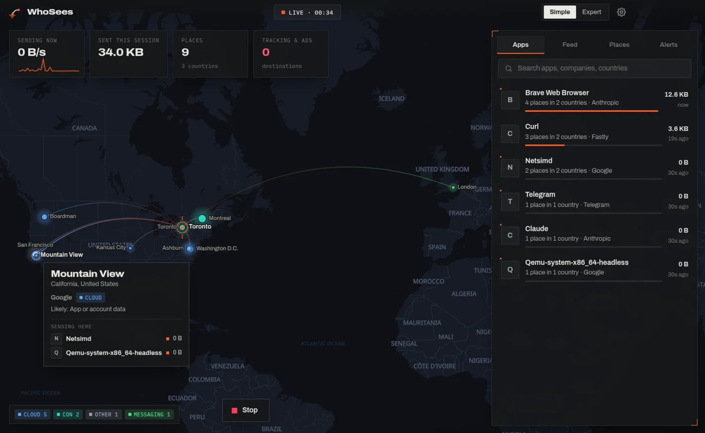
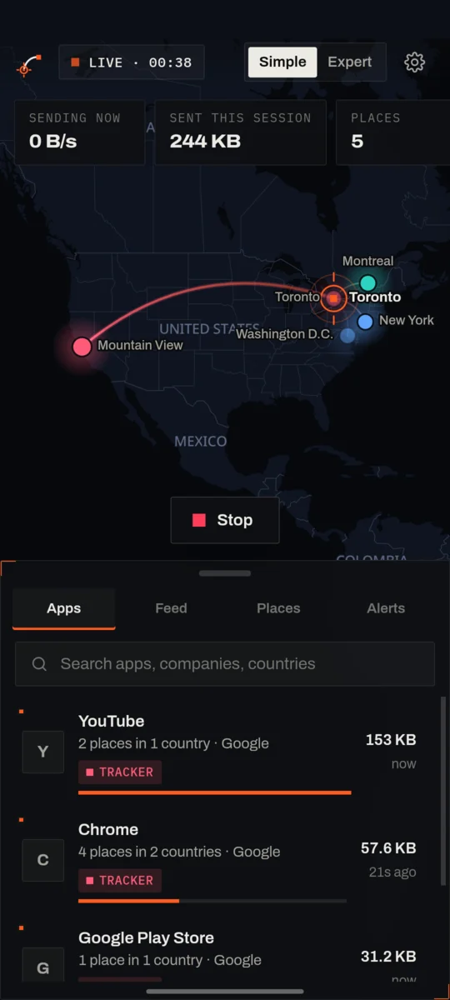

See who your apps talk to.
Every app on your phone and computer sends information to companies around the world. WhoSees shows you which app, which company and where, live on a map, in plain English.
Most apps share more than they let on. You never see it happen.
Weather apps, games, shopping apps, even your TV. Many send details about you to advertising and analytics companies you've never heard of. Your phone doesn't show you any of it. WhoSees does.
| APP | SENT DATA TO | WHERE | WHAT |
|---|---|---|---|
| A free weather appevery time you opened it | Four ad networks | San Francisco, Chicago | your location, advertising ID |
| A social appwhile you scrolled | An advertising company | Dublin, Ireland | what you looked at |
| A smart TV appevery 30 seconds | A viewing-data firm | Singapore | what's on screen |
| A free gamebetween levels | Two analytics companies | Frankfurt, Mumbai | how and when you play |
Examples of the kind of thing WhoSees shows. Yours will be about your own apps.
Open it when you're curious. Close it when you're done.
Press Start
No account to make. Nothing to set up.
Use your apps
Scroll, stream, play, shop. Just like normal.
Watch the map
Every connection appears as it happens, explained in a plain sentence.
Press Stop
WhoSees is completely off. It never runs in the background.
Read the full user guide, step by step with pictures →


Four answers your phone never gives you.
Find out which apps are tracking you, which advertising and analytics companies receive your data, and where in the world it goes, on Android, Windows and Linux.
Its real name and icon, not a technical code. See who's sending the most.
Google, Meta, Amazon, or the ad network nobody's heard of. Trackers and advertisers are labelled for what they are. How to see which apps are tracking you.
The city and country your data lands in, drawn on the map from wherever you are.
When an app sends it unprotected, WhoSees spots it directly. Otherwise it tells you what that kind of company usually collects, clearly marked "likely".
Legitimate apps almost never do this. If you don't recognise it, remove the app. WhoSees warns you about dangerous websites and malware servers the moment they show up, and blocks them with one tap.
Then do something about it.
Stop a whole app, a company, a website or a country, or every tracker and advertiser at once, with one tap. Blocks work while WhoSees runs and end when you press Stop, unless you choose to keep them.
Save a PDF report of everything a live view found: the apps, companies and countries, trackers, threats and every single connection. It's made on your device and never uploaded.
A privacy app that doesn't ask for your trust.
Everything is worked out on your device. We never receive your data.
No sign-up, no email. Our website counts visits on our own server, with no cookies.
It runs only while you look. Press Stop and it's off.
The code is public, so anyone can check it does what we say.
Free. Every feature. No catch.
There's no paid version and nothing to unlock. The live map, the companies, what kind of data and the privacy reports are all included, for everyone.
Like WhoSees? A small tip keeps it going.
It pays for the website, the AI tools used to build WhoSees, and keeping it up to date. Completely optional.
Amounts in US dollars. Opens PayPal. Tipping doesn't change anything in the app, and WhoSees never sees your payment details.
Built with AI. Open for anyone to check.
I'm an independent developer, not a company. I built WhoSees with an AI assistant (Claude, made by Anthropic) doing much of the writing and coding, while I designed it, made the decisions and tested every version on real devices.
An app that looks at your network traffic has to earn trust, and hiding how it was made would be a bad start. That's why all of it is open source: you, or anyone you trust, can read exactly what it does.
It's free and it stays free, every feature included. If you find it useful, you can buy me a coffee.
maker of WhoSees
Source code: github.com/techytj/whosees
Get WhoSees. It's free.
Also: Fedora package (.rpm) · all versions and release notes · install help · step-by-step guides for Android, Windows and Linux
The Windows installer is built automatically by GitHub from the public source code, never on a personal computer. How it's built, and the privacy statement.
Open the downloaded file and allow your browser to install apps when asked. Android may show a warning because WhoSees isn't from Google Play yet. Step-by-step with pictures.
Run the installer. Windows will say "Windows protected your PC": click More info, then Run anyway. Why this happens.
Make the AppImage executable (right-click, Properties, "Allow executing", or chmod +x) and open it. On Fedora, the .rpm installs it like any other app.
Can it read my messages or passwords?
No. WhoSees looks at where your data goes, like reading the address on an envelope but never the letter inside. Almost everything apps send is encrypted, and WhoSees doesn't open it. The only exception is information an app sends completely unprotected, which anyone on your Wi-Fi could read. WhoSees points that out so you know.
Is it a VPN? Does my data go somewhere?
On Android, WhoSees uses the phone's built-in VPN feature, because that's the only way Android lets an app see where other apps send data. It isn't a VPN service. Nothing is sent to a VPN server or to us, and your data goes exactly where it was going anyway. More on the Android page, and if your phone uses Private DNS, see how it affects WhoSees.
Why does it ask for permission or a password?
Seeing every connection and website name needs administrator approval on a computer. Windows shows a Yes/No prompt and Linux asks for your login password. The password goes to your computer's own security system, never to WhoSees. On Android you tap OK once to allow the VPN.
Will it slow down my phone or drain the battery?
It only runs while you're looking, so there's no drain the rest of the time. While it's on, things work normally. In testing on a Samsung Galaxy S21, streaming, browsing and downloads all ran at full speed.
What do "seen" and "likely" mean?
"Seen" means WhoSees read it directly in data an app sent unprotected, your location for example. "Likely" means the traffic was encrypted, so WhoSees tells you what that kind of company usually receives. It never presents a guess as a fact.
Is it really free? What's the catch?
No catch. WhoSees is open source and every feature is free, for everyone. There are no ads, no subscription and nothing is sold. If you'd like to help, you can buy me a coffee, but you never have to.
Is WhoSees a network monitor or a firewall?
Mostly a network monitor made for everyone: it shows which app connects where, which company that is, and where in the world, in plain English. It can also block, like a simple firewall: an app, a company, a website, a country, or every tracker and advertiser at once. Blocking works only while WhoSees runs. On a computer it needs Deep mode, and the firewall rules it adds are removed when you press Stop.
Can I save what it found?
Yes. After a live view (or during one), choose Save a report to get a PDF with a map, the key findings, every app, company, country and tracker, any threats, and a list of every connection. It's made on your device and isn't uploaded anywhere. On Android, the phone's own print screen saves it: choose Save as PDF.
How is it different from GlassWire, Little Snitch or Exodus Privacy?
GlassWire (Windows) and Little Snitch (Mac) are network monitors and firewalls with paid versions. Exodus Privacy lists the trackers built into Android apps, but doesn't watch them live. WhoSees shows live which app sends data to which company and where, on Windows, Linux and Android, and it's free and open source.
Who's behind WhoSees?
One independent developer, working with an AI assistant. The full story is in "How it was made" above.